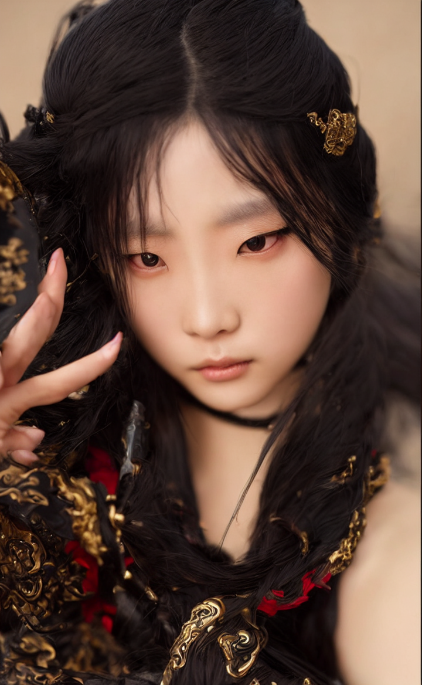

Image-to-Image · Coursework
Chinese
Warrior
使用 ComfyUI 與 Stable Diffusion 1.5，透過 Image-to-Image 圖生圖工作流程，將人物照片轉換為古風武俠視覺造型。
AI-assisted style transfer

01 / Project Overview
專案介紹
本次練習使用節點式的 ComfyUI 工作流程，經由 Load Image、VAE Encode、KSampler 與 VAE Decode 等節點完成圖片風格轉換。目標是在參考人物照片的構圖及部分臉部特徵的同時，將服裝與整體視覺改為中國風武士風格。
02 / Positive Prompt
正向提示詞
masterpiece, best quality, photorealistic portrait of a Chinese wuxia warrior, ornate ancient Chinese armor, cinematic lighting, realistic face, detailed clothing, dramatic atmosphere, preserve general pose and composition of source photo
03 / Negative Prompt
負向提示詞
worst quality, low quality, blurry, deformed face, distorted anatomy, extra fingers, extra limbs, watermark, text, cartoon
04 / Workflow
工作流程檔案
點擊下方按鈕下載 ComfyUI 工作流程 JSON。若要檢視最終生成參數，請以實際執行後儲存的 Workflow 為準。
檢視 Workflow JSON ↗05 / Reflection
操作心得
透過這次作業，我學會了如何使用 ComfyUI 將自己的照片轉換成不同風格。一開始在下載模型和設定工作流程時遇到不少困難，但經過多次嘗試後，終於成功生成了中國風武士的圖片。我也發現調整提示詞和 Denoise 參數會影響圖片的生成效果。最後，我還學會了如何使用 GitHub Pages 展示自己的作品。這次作業讓我對 AI 圖片生成有了更多了解，也覺得很有成就感。。
這段心得為可編輯的參考內容；繳交前可改成你自己的實際操作感想。